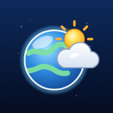

Blue Marble Forecast privacy policy
Last updated 17 October 2026. This covers the Blue Marble Forecast iPhone app and the website at bluemarbleforecast.com.
In short: there are no accounts, no ads, no analytics and no tracking. Your places and settings stay on your device. To show a forecast, the place's coordinates are sent to public weather services. If you choose to send feedback, what you write goes to the developer.
Your location
If you allow it, your device's location is used to show the weather where you are. It is kept only on your device; we never receive it or store it on a server. You can turn location access off at any time in your device's settings, and the app works without it.
Weather and map data
To get a forecast, the app sends the coordinates of the place you're viewing (your current location or a place you picked) straight from your device to these public services:
- Open-Meteo: forecasts, and place search (what you type in the search box).
- US National Weather Service (api.weather.gov): forecast text and alerts for places in the United States.
Radar, satellite and map images come from NOAA, NASA, Environment and Climate Change Canada, Germany's Deutscher Wetterdienst, EUMETNET OPERA (through a small relay we run that only passes the files along and doesn't record them) and the Iowa Environmental Mesonet. These requests ask for an area of the map, such as the part of the Earth on screen or, for Calm View's satellite photo, the area around the place you're viewing. Like any website, each service sees your device's IP address when it answers. Fonts come from Google Fonts and the website's 3D library from jsDelivr.
Stored on your device
Your home city, My Places, your last location, and settings such as units, language and map layers are saved in the app's local storage on your device. They are never sent to us. Deleting the app (or clearing the website's data) removes them.
Feedback you send
The app has an optional form for bug reports and ideas. Only if you send it, we receive:
- your message, and a screenshot if you attach one;
- an email address, only if you give one so we can reply;
- details that help fix bugs: the app version, device and browser type, screen size, language, which screen and place you were viewing, which map layers were on, and the time.
Feedback is stored in a private issue tracker on GitHub that only the developer can see, and is used only to improve the app. To have your feedback deleted, contact us below.
Children
The app doesn't collect personal information from anyone, including children under 13.
Changes
If this policy changes, the new version will be posted here with a new date.
Contact
Questions or deletion requests: use Send feedback in the app's Settings, and include an email address so we can reply.